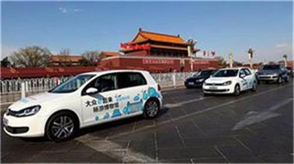

2011年-2012年
2012年7月，大众汽车与保时捷宣布组建综合汽车集团。
2011年3月，大众汽车收购保时捷汽车销售业务。
2011年，大众汽车集团年销量再创纪录，首次突破八百万辆。
2011年，大众汽车学院开幕。
2011年，大众汽车全球首支电动示范车队在北京上路。
2011年-2012年
2012年7月，大众汽车与保时捷宣布组建综合汽车集团。
2011年3月，大众汽车收购保时捷汽车销售业务。
2011年，大众汽车集团年销量再创纪录，首次突破八百万辆。
2011年，大众汽车学院开幕。
2011年，大众汽车全球首支电动示范车队在北京上路。
2008年-2010年
2010年3月，大众汽车为电动汽车设定发展路线图。
2010年，大众汽车集团年销量首次突破700万辆。
2009年7月，监事会批准大众汽车集团与保时捷合并。同年，
大众汽车集团汽车销量再创新高，达629万辆。
2008年3月，大众汽车集团获得瑞典卡车生产商斯堪尼亚公司
的控股权。集团10年发展蓝图——Mach 18战略发布。
2008年，大众汽车集团在全球范围新车零售量超过627万辆。
2006年-2007年
2007年12月，大众汽车推出最新7速DSG变速箱。
2007年5月，大众汽车两款发动机1.4升双增压直喷汽油机蝉联
2007年度世界最佳发动机奖。
2007年，大众汽车集团在全球范围新车零售量超过620万辆，销售
额高达1,089亿欧元；经营利润达62亿欧元。
2006年10月，大众汽车集团收购MAN公司15.06%的股份。
2000年-2003年
2003年，第五代Golf开始生产，在其设计中体现一种新的活
力观。
2002年12月，“Auto 5000 GmbH”公司（经营着集团在沃尔
夫斯堡的一间工厂）
开始Touran小型厢型车的生产。公司
制定了一种特别的集体支付模式，旨在实施精益生产，
涉及
扁平化的组织结构、团队合作、灵活的工作时间和鼓励工
人们在生产改进中
扮演更积极的角色。
2002年8月，在Volkswagen Slovakia（布拉迪斯拉发），
一
款豪华越野车Touareg开始量产，标志着大众品牌正式进入一个全新的市场领域。
1990年-2000年
1999年7月，Lupo 3L TDI的推出标志着首款耗油率仅3升/100公里的量产车问世， 大众汽车公司再次在汽车业
1993年2月17日，一汽-大众汽车有限公司在总装车间举行第10000辆捷达轿车下线仪式。 6月，公司被评为中国500家最大工业企业之一。
1991年12月5日，中国第一辆捷达A2轿车在一汽轿车厂组装下线。
1991年 2月，一汽－大众汽车有限公司正式成立。
1980年-1990年
1985年，上海大众汽车有限公司成立。
1984年引进至今，上海大众汽车桑塔纳已经进行了几百项技
术改进，技术含量不断提升，
并一直保持着良好的销售势头，
被誉为中国车坛的“常青树”。
1983年6月，第二代Golf的生产正式拉开序幕。该款车型在设
计上非常适合于高度自动化的装配流程，
在特别建立的最后
装配车间（Hall 54），机器人首次应用于汽车制造中。
1976年，首辆Golf GTI下线。该款车型以其110 bhp引擎掀起
了一阵马路旋风，
为又一个传奇的诞生奠定了基础。
1960年-1980年
1976年，首辆Golf GTI下线。该款车型以其110 bhp引擎掀起了一阵马路旋风, 为又一个传奇的诞生奠定了基础。
1974年1月，首辆Golf在沃尔夫斯堡亮相。 这款紧凑型箱式小客车一经推出便快速风靡，进而成为甲壳虫神话的继承者。 同年公司还推出了运动型跑车Scirocco，一直生产到1981年。
1960年-1980年
1949年-1960年
1955年，来自德国国内和国外的大众职员和经销商一起在沃
尔夫斯堡庆祝
第一百万辆甲壳虫的下线。
1950年3月8日，Type 2投入生产，进一步扩充了公司的产品
线。
凭借丰富的多功能特性，Volkswagen Bus
（即今天仍
为许多人所熟悉的"VW Bully"）很快掀起了订购热潮。1956
年，
一个独立的Transporter生产基地在汉诺瓦（Hanover）
成立，同时埋下了今天大众商用车品牌的种子。
1945年-1949年
二战结束后，1945年6月中旬，大众汽车公司由英国军政府接管。 在Ivan Hirst少将的管理下，甲壳虫（Volkswagen Beetle）投入大量生产。
1937年-1945年
1937年3月28日，"Gesellschaft zur Vorbereitung des De
utschen Volkswagens mbH"公司
宣告成立，随后于1938年9月
16日更名为"Volkswagenwerk GmbH"。1938年早些时候，在今
天的沃尔夫斯堡，
大众汽车公司开始建厂，用以生产由
Ferdinand Porsche设计的新款车型。
1998年9月，为补偿当时的所作所为，大众汽车公司以二战期
间在大众被迫劳动的
强制劳工的名义，成立了一项人道主义
基金。截至2001年底，已有26国家超过2，050人从该基金获得
人道主义援助。
此外，在沃尔夫斯堡，一个旨在纪念二战期
间在大众被迫劳动的强制劳工的纪念馆正在建设中，
大众公
司现有新员工以义工形式给予了大力支持。